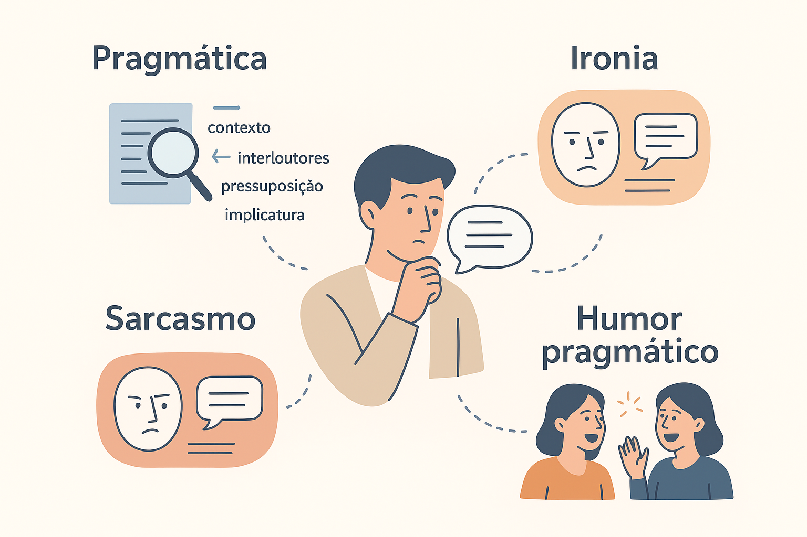

Pragmática e Discursos Irônicos: Ironia, Sarcasmo e Humor Pragmático
A faculdade da linguagem humana atinge o ápice de sua plasticidade e inteligência quando abandonamos a literalidade estrita para transitar pelo fascinante território da comunicação indireta. Dizer “Que dia ensolarado!” sob um temporal torrencial, sussurrar “Continue assim, você está se superando na incompetência” diante de uma falha previsível ou provocar o riso desarmado através de uma piada que subverte a lógica cotidiana são experiências universais. Esses três fenômenos — a ironia, o sarcasmo e o humor pragmático — compartilham o mesmo DNA sociocognitivo: nenhum deles pode ser decifrado isoladamente pelo dicionário; todos dependem do contexto comunicativo, do conhecimento partilhado e de complexos cálculos inferenciais.
Embora o senso comum costume tratar esses termos como sinônimos intercambiáveis, a Pragmática contemporânea demonstra que eles exercem forças ilocucionárias e funções interacionais marcadamente divergentes. Como comprovaram os modelos teóricos de Paul Grice (1975), Dan Sperber e Deirdre Wilson (1981), Salvatore Attardo (1994) e Marta Dynel (2014), enquanto a ironia opera como um comentário distanciado e polifônico sobre a realidade, o sarcasmo constitui uma arma retórica agressiva de ataque à imagem pública do interlocutor, e o humor pragmático funciona como um dispositivo lúdico e integrador fundado na quebra controlada de scripts cognitivos.
Nos exames vestibulares mais concorridos do país (como ENEM, PAES UEMA, Fuvest e Unicamp), nas avaliações de Língua Portuguesa para concursos públicos e na análise crítica do discurso midiático e das redes sociais, dominar a anatomia desses recursos é essencial para ler além das aparências, desmascarar violências discursivas camufladas de "brincadeira" e apreciar a densidade estética das grandes obras literárias e humorísticas.
Neste artigo acadêmico completo, você explorará a arquitetura inferencial dos discursos não literais, a mecânica da menção ecoica na ironia, a dimensão avaliativa hostil do sarcasmo, a teoria da incongruência de scripts no humor de Attardo, matrizes comparativas detalhadas, roteiro metodológico, exemplos práticos comentados, questões oficiais resolvidas e sínteses teóricas.

A matriz pragmática dos discursos não literais
Para que um enunciado não literal funcione, os falantes devem operar sob o pressuposto de uma competência pragmática compartilhada. Como sintetiza Stephen Levinson (1983, 2007), a pragmática investiga o hiato sistemático existente entre o significado da sentença (o que as palavras dizem no código abstrato) e o significado do falante (o que o enunciador pretende comunicar em uma cena concreta).
Essa dinâmica estrutura-se a partir de dois conceitos capitais:
Engrenagens Pragmáticas do Sentido Implícito
- Pressuposições Compartilhadas (Common Ground): o repertório prévio de saberes, crenças mútuas e valores culturais aceitos tacitamente pelos participantes da conversa, sem o qual nenhuma quebra irônica pode ser percebida;
- Cálculo de Implicaturas Conversacionais (Grice, 1975): o raciocínio dedutivo acionado pelo ouvinte quando percebe que o locutor violou ostensivamente uma das máximas conversacionais (especialmente a de Qualidade ou de Relação), buscando um sentido adicional implícito para manter a cooperação comunicativa.
A essência da comunicação pragmática segundo Levinson
“A pragmática é o estudo das relações entre a linguagem e os contextos que são gramaticalizados ou codificados na própria estrutura da língua. Compreender uma interação exige reconstruir as pressuposições, inferir as implicaturas e rastrear como os usuários manipulam as circunstâncias para produzir sentidos que ultrapassam infinitamente a mera decodificação semântica literal” (LEVINSON, 1983, p. 9; ATTARDO, 1994).
A Ironia: desvio ecoico e comentário distanciado
Superando a antiga definição retórica de "dizer o contrário do que se pensa", a Pragmática contemporânea consagrou a Teoria da Menção Ecoica formulada por Dan Sperber e Deirdre Wilson (1981, 1995). Para os autores, o enunciado irônico não substitui mecanicamente um significado positivo por um negativo: ele faz eco a uma crença, voz, expectativa ou discurso anterior, expressando uma atitude de distanciamento cético, desaprovação ou zombaria em relação a essa voz evocada.
Quando alguém chega ensopado da rua e diz “Nossa, que dia seco!”, o enunciado evoca a expectativa idealizada de tempo firme que os participantes acalentavam, confrontando-a com a realidade desastrosa da chuva torrencial.
A eficácia da ironia repousa sobre três pilares indissociáveis:
- Incongruência Contextual: contradição flagrante entre a proposição literal e o mundo observável;
- Atitude Dissociativa do Locutor: o falante rejeita a responsabilidade moral pela veracidade da afirmação que profere;
- Cumplicidade Inferencial: a necessidade de que o alocutário reconheça o eco e participe do julgamento crítico.
O Sarcasmo: a ironia com finalidade agressiva e avaliativa
Se a ironia pode ser um recurso filosófico, sutil e lúdico, o sarcasmo é sua vertente bélica e agressiva. A etimologia da palavra é elucidativa: deriva do grego clássico sarkasmós, originado do verbo sarkázein, que significa literalmente "morder os lábios de raiva" ou "rasgar a carne".
Como argumenta a linguista Marta Dynel (2014) em seus estudos sobre o humor e a mentira, o sarcasmo opera como uma "ironia maliciosa" (overt untruthfulness associada à agressão direta). O propósito comunicativo central do sarcasmo não é o riso desarmado ou a reflexão poética, mas a emissão de um juízo depreciativo cortante contra uma vítima identificável.
A anatomia avaliativa do sarcasmo segundo Marta Dynel
“O sarcasmo combina o mecanismo do eco irônico com um alvo avaliativo explícito e negativo. Ele opera como um ataque retórico disfarçado pela convenção da não literalidade, cujo objetivo ilocucionário primário é rebaixar a dignidade do interlocutor, censurar comportamentos ou sinalizar desprezo social” (DYNEL, 2014, p. 62; BROWN; LEVINSON, 1987).
Sob o prisma da Teoria da Polidez de Brown e Levinson (1987), o sarcasmo constitui um dos mais severos Atos que Ameaçam a Face (FTA): ele ataca frontalmente a face positiva do interlocutor (sua imagem de competência, decência ou valor pessoal), muitas vezes bloqueando a chance de réplica pelo uso dissimulado da "brincadeira".
Humor Pragmático: quebra de scripts e incongruência cognitiva
Diferentemente do sarcasmo, o humor pragmático nem sempre carrega carga hostil ou destrutiva: ele frequentemente atua como o grande lubrificante da cooperação humana e da solidariedade coletiva. O linguista italiano Salvatore Attardo (1994), em sua Teoria Geral do Humor Verbal (GTVH), demonstrou que o riso nasce da incongruência entre scripts.
Um script (ou esquema cognitivo) é um pacote estruturado de informações enciclopédicas sobre o mundo armazenado em nossa mente (por exemplo, o script "ida ao restaurante", o script "atendimento médico" ou o script "entrevista de emprego"). O humor pragmático opera acionando primeiramente um script familiar previsível, para em seguida quebrá-lo abruptamente no desfecho através de uma inferência inesperada.
O Sarcasmo (Ataque Hostil e Censura)
• Finalidade: Ridicularizar, ferir a face positiva e censurar o outro.
• Tom: Ácido, mordaz, cortante e pessoalizado.
• Alvo: Uma pessoa real presente ou grupo antagônico.
• Efeito Social: Demarcação de superioridade, atrito e exclusão.
O Humor Pragmático (Incongruência e Adesão)
• Finalidade: Despertar o riso pela subversão lúdica de esquemas cognitivos.
• Tom: Divertido, surpreendente, criativo e reflexivo.
• Alvo: A própria rigidez da linguagem, o absurdo das normas sociais.
• Efeito Social: Coesão de grupo, redução de tensões e empatia.
A tabela a seguir sistematiza a matriz comparativa entre os três recursos da linguagem não literal:
| Recurso Discursivo | Operação Pragmática Central | Mecanismo Teórico Predominante | Alvo / Direcionalidade | Exemplo Típico |
|---|---|---|---|---|
| Ironia | Distanciamento reflexivo entre o dito e o comunicado | Menção ecoica dissociativa (Sperber & Wilson) / Polifonia (Ducrot) | Situações do destino, ideias, crenças prévias universais | “Excelente ideia fazer reforma no teto bem na época das chuvas.” |
| Sarcasmo | Ataque retórico depreciativo disfarçado de não literalidade | Ironia maliciosa avaliativa (Dynel) e agressão à face (Brown & Levinson) | Indivíduo específico com intenção de humilhação e censura | “Parabéns pelo relatório: conseguiu errar tudo o que já estava pronto!” |
| Humor Pragmático | Resolução lúdica de incongruência cognitiva e quebra de regras | Choque e sobreposição de scripts mentais opostos (Attardo) | Incongruências da vida social, ambiguidades lexicais, clichês | “Não me considero preguiçoso: apenas poupo minha energia vital para o futuro.” |
A tênue fronteira entre a piada, o sarcasmo e a agressão moral
No ambiente corporativo, escolar e nas redes sociais, é extremamente comum que agressores justifiquem ofensas cruéis dizendo “Foi apenas uma brincadeira, você não tem senso de humor!”. A Pragmática desmascara essa falácia: se a fala carrega um alvo pessoalizado com juízo depreciativo direcionado a rebaixar a face positiva da vítima, trata-se de sarcasmo agressivo, não de humor cooperativo. O humor genuíno aproxima as partes; o sarcasmo estabelece relações de poder assimétricas e intimidação.
Roteiro metodológico: como analisar ironia, sarcasmo e humor em textos
Para estudantes de Letras, candidatos a vestibulares e concursos e pesquisadores do discurso, a análise minuciosa desses fenômenos deve seguir este procedimento em seis etapas:
Passo a Passo da Análise da Linguagem Não Literal
- Isolamento da proposição literal: transcrever o que a frase afirma estritamente segundo as regras sintático-semânticas;
- Mapeamento das pistas contextuais e paralinguísticas: verificar o tom prosódico, pausas, expressões faciais (na oralidade) ou aspas, pontuação enfática e contraste com imagens (em tirinhas e charges);
- Identificação das máximas conversacionais transgredidas: checar se houve quebra ostensiva da Qualidade (dizer o irreal), da Relação (fuga do tema) ou de Modo (trocadilhos e ambiguidade);
- Classificação do alvo da enunciação: averiguar se o alvo é uma ideia abstrata (ironia sutil), a imagem de um interlocutor específico (sarcasmo) ou a surpresa de um script cognitivo (humor);
- Dedução da implicatura ou reconciliação de scripts: explicitar em palavras claras qual foi a conclusão mental que o ouvinte foi obrigado a formular;
- Avaliação do impacto sociopolítico e ético: diagnosticar se o enunciado serviu para unir os interlocutores em torno do riso reflexivo ou se funcionou como instrumento de exclusão e humilhação.
Exemplos práticos de análise empírica aplicada
Caso 1: O sarcasmo no ambiente corporativo
Cena: Um funcionário estagiário comete um equívoco formal na formatação de uma planilha do Excel. O supervisor sênior aproxima-se na frente de toda a equipe e diz em tom pausado e sorriso forçado:
“Com uma dedicação desse calibre e essa inteligência fulgurante, tenho certeza de que a presidência da empresa te aguarda já na semana que vem.”
Análise Pragmática:
1. Quebra de Qualidade: O supervisor profere uma asserção escandalosamente falsa no contexto (o erro é evidente e o estagiário não será promovido à presidência);
2. Componente Avaliativo de Dynel: A fala não constitui humor leve: mobiliza a ironia maliciosa unicamente para rotular o subordinado de tolo perante os pares;
3. Agressão à Face Positiva: Trata-se de um sarcasmo corporativo violento que desestabiliza a segurança psicológica da vítima, bloqueando sua capacidade de resposta sob o manto cínico do falso elogio.
Caso 2: A charge de humor pragmático por quebra de script
Cena Gráfica: Um paciente chega aflito ao consultório médico segurando dezenas de exames e pergunta ansioso:
— Doutor, seja sincero: meu caso é grave? Vou morrer?
O médico ajusta os óculos, olha nos olhos do paciente e responde calmamente:
— Sim, com certeza. Mas não se preocupe: todos os seres humanos são mortais segundo a biologia. Agora, sobre a sua gripe, ela passa em três dias com repouso.
Análise dos Scripts de Attardo:
• Script Inicial Ativado: O script médico do "diagnóstico de doença terminal catastrófica", acionado pelo pânico do paciente e pela confirmação inicial seca do médico (“Sim, com certeza”);
• Quebra e Sobreposição de Script: A resposta seguinte do médico desloca abruptamente a cena para o script filosófico-ontológico da condição mortal da espécie humana, desfechando com o diagnóstico cômico de uma simples gripe passageira;
• Efeito Pragmático: Humor límpido e integrador fundado na quebra da expectativa inferencial sem agressão à dignidade de ninguém.
Conclusão da análise empírica
A dissecação pragmática comprova que as palavras são instrumentos maleáveis: com a mesma ferramenta da não literalidade podemos ferir cruelmente um colega por meio do sarcasmo ou iluminar o absurdo da existência através do riso inteligente do humor e da ironia.
Questões para estudo e reflexão
Questão 1
(Concurso Público / Linguística e Teoria da Comunicação) De acordo com os estudos pragmáticos contemporâneos de Salvatore Attardo e Marta Dynel sobre a linguagem não literal, assinale a opção que distingue corretamente o sarcasmo do humor pragmático cooperativo:
- A) O sarcasmo não envolve a violação de máximas griceanas, enquanto o humor depende exclusivamente de erros fonéticos.
- B) O humor cooperativo visa criar laços afetivos e aliviar tensões por meio da resolução de incongruências cognitivas, enquanto o sarcasmo opera como ironia maliciosa com alvo pessoalizado e intenção de depreciação moral.
- C) A ironia e o sarcasmo são fenômenos estritamente semânticos que dispensam o conhecimento do contexto situacional.
- D) O humor pragmático só ocorre na linguagem oral, sendo inviável a sua realização na modalidade escrita de textos.
Ver resposta comentada
Gabarito: B.
Resposta comentada: A distinção fundamental apontada por Dynel (2014) e Attardo (1994) reside na intencionalidade interacional: o humor cooperativo busca a surpresa lúdica e a proximidade interpessoal pela sobreposição inesperada de scripts cognitivos; já o sarcasmo instrumentaliza o eco irônico para infligir danos à imagem pública (face positiva) de um alvo individualizado.
Questão 2
(PAES UEMA / Letras) Em uma famosa comédia teatral de Martins Pena, uma personagem vaidosa e avarenta afirma: “Minha única preocupação nesta vida é fazer a caridade e distribuir minha fortuna aos pobres!”, ao mesmo tempo em que esconde avidamente sacos de moedas de ouro sob o colchão e nega um pedaço de pão a um mendigo. Analise como a ironia dramática é construída a partir da Teoria da Menção Ecoica de Sperber e Wilson.
Ver resposta comentada
Resposta comentada: A ironia dramática nasce do descompasso ecoico: a personagem verbaliza um enunciado que ecoa o discurso idealizado da caridade cristã e da virtude moral católica da sociedade da época. Contudo, as ações físicas simultâneas da personagem (esconder o ouro e negar esmola) desmentem escandalosamente as palavras enunciadas. O dramaturgo mobiliza esse eco para que a plateia adote uma atitude de distanciamento crítico e riso desmistificador perante a hipocrisia burguesa retratada no palco.
Questão 3
(ENEM / Linguagens, Códigos e suas Tecnologias) Em uma conversa de aplicativo de mensagens, um grupo de estudantes combina um trabalho em equipe. Um dos integrantes não comparece às reuniões virtuais, não redige nenhuma página e, na véspera da entrega, envia a seguinte mensagem: “Galera, coloquei meu nome na capa do trabalho para vocês não terem o trabalho de digitar. Ficou show!”. A resposta de um dos colegas foi: “Muito obrigado pelo seu sacrifício heroico, não sei o que seria de nós sem o seu imenso esforço intelectual!”. A resposta do colega configura-se pragmaticamente como:
- A) Um agradecimento sincero fundamentado no cumprimento da máxima de qualidade de Grice.
- B) Um ato diretivo formal emitido com polidez negativa absoluta.
- C) Uma manifestação de sarcasmo no qual o falso elogio atua como ataque retórico explícito à conduta negligente do colega faltoso.
- D) Uma falha sociopragmática decorrente do uso inadequado de emojis.
Ver resposta comentada
Gabarito: C.
Resposta comentada: A resposta mobiliza a estrutura de um ato expressivo de agradecimento associado a hipérboles escancaradas (“sacrifício heroico”, “imenso esforço intelectual”) para vehicular o oposto da literalidade. Trata-se de sarcasmo incontestável: o falso agradecimento pune moralmente a postura oportunista do aluno negligente, expondo sua falta de cooperação perante todo o grupo.
Questão 4
(Exame Acadêmico / Pós-Graduação em Linguística) Explique como a Teoria Geral do Humor Verbal (GTVH) de Salvatore Attardo articula a violação da Máxima de Relação (pertinência) de Paul Grice com a noção de "incongruência de scripts".
Ver resposta comentada
Resposta comentada: Na perspectiva de Attardo, o humor fundamenta-se na violação estratégica e controlada das máximas conversacionais. Ao contar uma anedota ou construir uma fala cômica, o enunciador parece inicialmente cooperar com o tema em discussão, ativando um script contextual previsível na mente do ouvinte. No entanto, no ápice do enunciado (o punchline), o locutor quebra ostensivamente a Máxima de Relação, introduzindo um elemento temático aparentemente desconexo ou absurdo. Para salvar a coerência da interação, o ouvinte realiza uma inferência acelerada e descobre que a frase desconexa ativa perfeitamente um segundo script oculto que se sobrepõe ao primeiro. É na resolução mental dessa aparente incongruência que o riso é deflagrado.
Questão 5
(Vestibular Tradicional / Filosofia da Linguagem) O que diferencia epistemologicamente a ironia polifônica de Oswald Ducrot da concepção de ironia como simples "mentira consentida"?
Ver resposta comentada
Resposta comentada: A mentira é uma violação clandestina e dissimulada da Máxima de Qualidade: o mentiroso deseja que o ouvinte acredite sinceramente na verdade do que foi afirmado. Na ironia polifônica de Ducrot, o locutor não quer enganar ninguém: ele coloca no palco do discurso uma voz estranha (um enunciador fictício) que defende uma tese insustentável. Ao invés de mentir, o locutor encena o erro de terceiros diante de uma plateia inteligente para que todos partilhem da rejeição crítica daquela voz, revelando que a ironia é um ato polifônico de julgamento estético e moral.
Resumo de Ironia, Sarcasmo e Humor Pragmático
- A Pragmática estuda a ironia, o sarcasmo e o humor como manifestações complexas da comunicação não literal;
- A interpretação desses fenômenos depende de pressuposições mútuas (common ground) e do cálculo de implicaturas conversacionais;
- A ironia fundamenta-se no distanciamento reflexivo: para Grice, na quebra da Máxima de Qualidade; para Sperber & Wilson, na menção ecoica com atitude cética;
- O sarcasmo é uma modalidade agressiva de ironia (ironia maliciosa de Marta Dynel), voltada a ferir a face positiva de um alvo com censura e depreciação;
- O humor pragmático (Salvatore Attardo) decorre da resolução cognitiva de incongruências entre scripts mentais opostos;
- Pistas paralinguísticas (prosódia, olhares) e textuais (aspas, hipérboles, memes) são indispensáveis para sinalizar a atitude não literal do falante;
- No ambiente digital, a ausência de pistas explícitas gera o colapso do contexto descrito pela Lei de Poe, convertendo sátiras em falsas verdades;
- Compreender essas distinções é indispensável para desarmar violências discursivas, ler criticamente charges e notícias e gabaritar exames oficiais como o ENEM.
Perguntas frequentes sobre Ironia, Sarcasmo e Humor
Qual é a diferença fundamental entre ironia e sarcasmo na Pragmática?
A ironia é um mecanismo de distanciamento e reflexão crítica que pode ter alvo impessoal ou estético; o sarcasmo é uma modalidade agressiva de ironia direcionada a um alvo humano específico, com a intenção clara de rebaixar, censurar e ferir a face positiva do interlocutor.
O que define o "humor pragmático" segundo Salvatore Attardo?
Segundo Attardo, o humor pragmático resulta da incongruência entre um script (esquema cognitivo) ativado inicialmente pelo enunciado e outro script inesperado revelado pelo desfecho, exigindo uma rápida reinterpretação inferencial por parte do ouvinte.
O que Marta Dynel define como "ironia maliciosa"?
A linguista Marta Dynel conceitua o sarcasmo como "ironia maliciosa" (covert untruthfulness), destacando que sua meta ilocucionária primária é veicular uma avaliação negativa explícita sob o disfarce de um eco irônico.
Como as máximas de Grice operam na criação do humor?
O humor explora a quebra planejada e controlada das máximas conversacionais, especialmente a de Relação (introduzindo uma resposta desconexa) e a de Modo (usando trocadilhos, duplos sentidos e ambiguidades voluntárias).
Quais são as principais funções sociais do humor pragmático?
O humor cumpre funções vitais: atua como lubrificante social na redução de tensões em ambientes formais, estabelece cumplicidade e laços de empatia em grupos, veicula críticas políticas sem ruptura direta e demarca a identidade cultural de uma comunidade de fala.
Por que o sarcasmo representa uma ameaça grave à face (FTA)?
Porque o sarcasmo desqualifica a competência, a inteligência ou a conduta moral da vítima perante os presentes, destruindo sua autoimagem pública (face positiva) de forma desleal, já que o tom irônico dificulta uma defesa frontal imediata.
O que é "mencionação ecoica" na teoria de Sperber e Wilson?
É a ideia de que o enunciado irônico evoca (faz eco a) uma voz, opinião prévia, norma moral ou expectativa social frustrada, permitindo ao locutor expressar simultaneamente seu julgamento de desaprovação ou escárnio em relação a essa voz.
Como esse trio discursivo é cobrado em provas como o ENEM e vestibulares?
As provas exigem que o candidato reconheça as intenções críticas em tirinhas, charges e crônicas, distinga o riso reflexivo do ataque sarcástico e identifique como a quebra de expectativas linguísticas e contextuais constrói a argumentação do texto.
Considerações finais
A ironia, o sarcasmo e o humor pragmático representam a vitória definitiva da inteligência comunicativa sobre a rigidez das palavras. Ao subverter a correspondência unívoca entre o que se diz e o que se pensa, os seres humanos constroem mundos simbólicos nos quais o riso ilumina o absurdo social, a crítica destrona autoridades arrogantes e o afeto cúmplice une os interlocutores em um pacto silencioso de compreensão mútua.
Para estudantes de Letras, educadores, jornalistas, psicólogos e analistas da comunicação contemporânea, discernir a sutileza da ironia reflexiva da ferocidade do sarcasmo hostil é o requisito primordial para proteger a dignidade nas interações interpessoais e usufruir com maestria da infinita liberdade expressiva da linguagem humana.
Conteúdos relacionados
- Introdução à Pragmática: o Estudo do Uso da Linguagem em Contexto
- Deixis: a linguagem que aponta para o contexto
- Teoria dos Atos de Fala: Austin, Searle e a Ação pela Linguagem
- Princípios da Comunicação: Cooperação, Máximas de Grice e Cortesia
- Inferência e Implicatura: o Sentido Além do Literal
- Pragmática e Gêneros Textuais: a Linguagem em Ação
- Pragmática Intercultural e Variação Pragmática
- Pragmática e Ironia: O Sentido nas Entrelinhas
- Pragmática | Linguagem, Contexto e Construção de Sentidos — Índice Geral
Referências
- ATTARDO, Salvatore. Linguistic Theories of Humor. Berlin: Mouton de Gruyter, 1994.
- BROWN, Penelope; LEVINSON, Stephen C. Politeness: Some Universals in Language Usage. Cambridge: Cambridge University Press, 1987.
- DUCROT, Oswald. O dizer e o dito. Tradução de Eduardo Guimarães. Campinas: Pontes, 1984/1987.
- DYNEL, Marta. Irony, Deception and Humour: Seeking the Truth about Overt and Covert Untruthfulness. Berlin: De Gruyter, 2014.
- GRICE, Herbert Paul. Logic and Conversation. In: COLE, Peter; MORGAN, Jerry (ed.). Syntax and Semantics: Speech Acts. New York: Academic Press, 1975. v. 3, p. 41-58.
- HUTCHEON, Linda. Teoria e política da ironia. Tradução de Julio Jeha. Belo Horizonte: Editora UFMG, 2000.
- LEVINSON, Stephen C. Pragmatics. Cambridge: Cambridge University Press, 1983.
- LEVINSON, Stephen C. Pragmática. Tradução de Alceu Dias Pinto e Aníbal Mari. São Paulo: Martins Fontes, 2007.
- SPERBER, Dan; WILSON, Deirdre. Irony and the use-mention distinction. In: COLE, Peter (ed.). Radical Pragmatics. New York: Academic Press, 1981. p. 295-318.
- SPERBER, Dan; WILSON, Deirdre. Relevance: Communication and Cognition. 2. ed. Oxford: Blackwell, 1995.
Explore Outros Conteúdos
Continue seus estudos acessando outras seções do site Mestre Kira: